Cómo usar la Plataforma de Evaluación de punta a punta
Esta guía recorre cada pantalla real de la plataforma: desde el registro del grupo y la obtención de la
API Key, hasta las corridas de Calibración (30 casos), la lectura del
Diagnóstico Ciego, la recuperación ante cortes de túnel y la entrega en la
Evaluación Final (100 casos).
Qué necesitás tener listo
1. Código de invitación y URL
La cátedra te entrega la URL de la plataforma web y el código de invitación para registrar tu grupo.
2. Tu servidor activo con URL pública
Tu agente debe estar escuchando en GET /health y POST /solve, expuesto por túnel (ej. Cloudflare Tunnel / ngrok en Colab) o servidor propio.
3. Validación previa en dev_set.json
Antes de gastar intentos de calibración, verificá 0 errores de esquema en local con python scripts/run_local_eval.py.
4. Datos de todos los integrantes
Nombre, apellido y correo electrónico de cada integrante (1 a 6 por grupo). Cada correo puede pertenecer a un único equipo.
Explorar el Leaderboard Público
Al abrir la plataforma ves el Leaderboard público dividido en los dos tracks oficiales: Track Open-Weight (Google Colab GPU T4 + Túnel) y Track Cloud Propietario (APIs Gestionadas).
- En la barra superior derecha aparecen dos indicadores globales en vivo: si la Fase Final está cerrada o abierta, y si los resultados finales están en suspenso o revelados.
- Podés alternar la vista entre
Calibración (30 casos)yFinal (100 casos). - El orden de desempate es siempre: 1° Puntaje Neto, 2° Menor Total Tokens, 3° Menor Latencia Promedio.
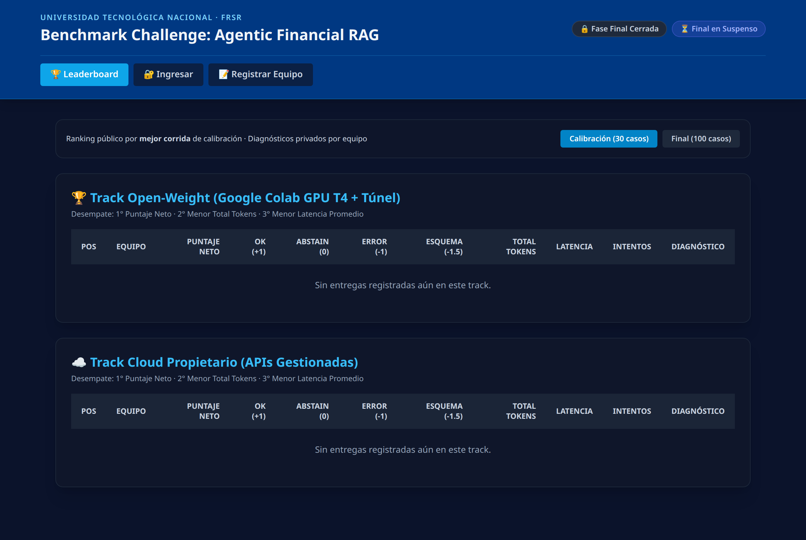
Registrar tu Equipo (1 a 6 integrantes)
Hacé clic en la pestaña 📝 Registrar Equipo. Solo una persona del grupo debe completar este formulario una única vez:
- Ingresá el Código de invitación provisto por la cátedra y elegí el Nombre del grupo.
- Seleccioná el Track que van a implementar: Colab / Open-Weight, Cloud Propietario o Ambos Tracks.
- Cargá a cada integrante (de 1 a 6) con su Nombre, Apellido y Email usando el botón
+ Agregar integrante. - Presioná Crear Equipo y Generar API Key.
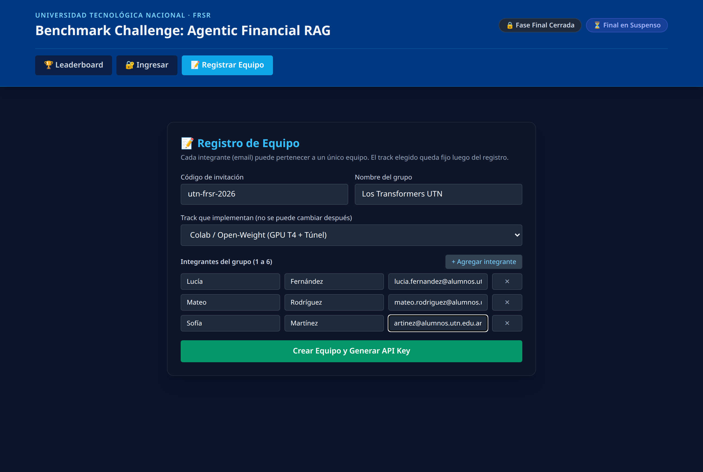
Guardar la API Key del Grupo
Al confirmar el registro, la plataforma muestra un recuadro verde con las credenciales del grupo, incluyendo el
Team ID y la API Key (con prefijo utn_...).
API Key en texto plano. Usá Copiar credenciales o
Descargar .txt y compartila con todo tu grupo antes de cerrar esa pantalla. Si la pierden, deberán pedirle a la cátedra que genere una nueva.
Luego podés hacer clic directo en ➡️ Ir a Ingresar para precargar el formulario de login.
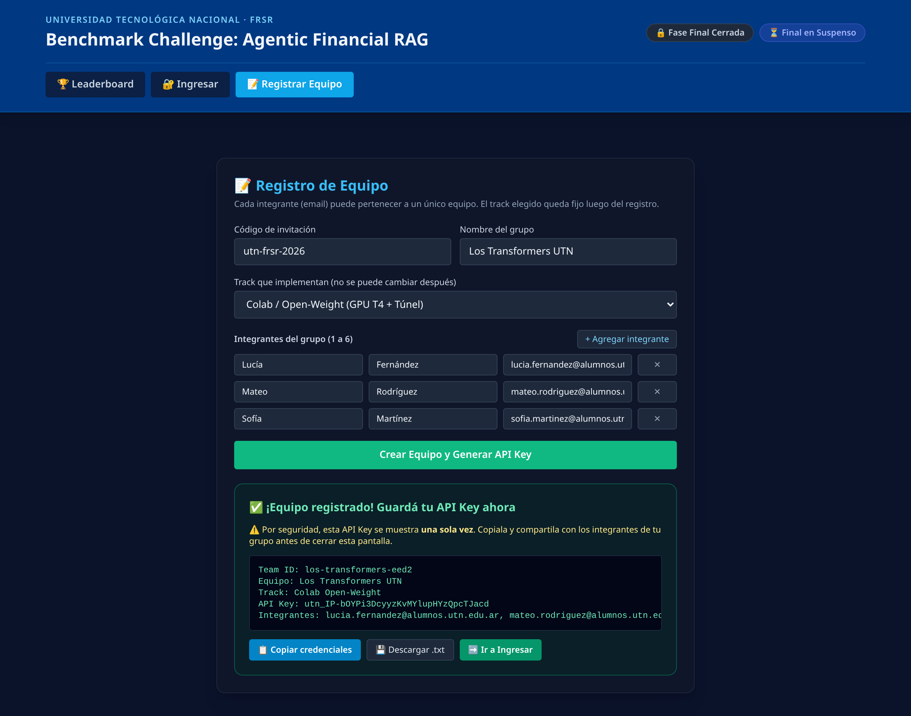
Ingresar a la Plataforma (Login)
En la pestaña 🔐 Ingresar, dejá seleccionado Rol Equipo e ingresá:
- Email del integrante: el correo de cualquiera de los integrantes registrados en el grupo.
- API Key del equipo: la clave
utn_...compartida del grupo.
De esta forma, la plataforma sabe exactamente qué integrante lanzó cada evaluación en el historial.
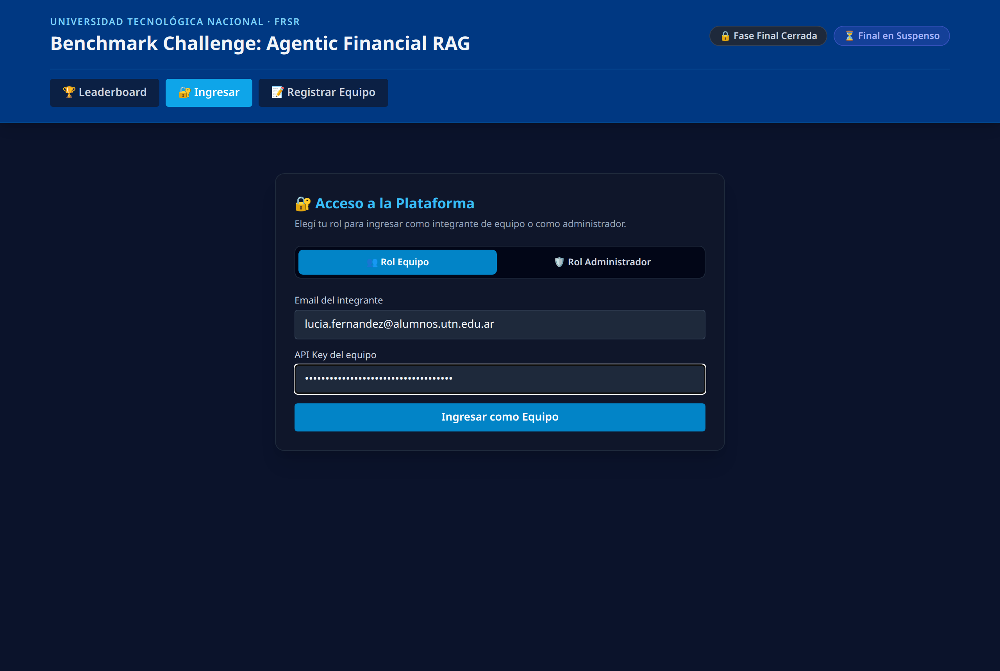
Conocer el Panel 🚀 Mi Equipo
Una vez logueado, accedés al panel privado de tu grupo. Allí vas a encontrar tres bloques principales:
- Cabecera del equipo: nombre,
team_id, track(s) habilitado(s) y lista de integrantes. - Lanzar Evaluación en Vivo: selector de track, campo para pegar la URL pública del agente (sin barra final ni ruta
/solve, ej.https://tu-tunel.trycloudflare.com), cupos restantes y estado del Cooldown. - Historial de Corridas del Equipo: tabla con todas las ejecuciones lanzadas por cualquier integrante.
GET /health)
Antes de iniciar cada evaluación, la plataforma verifica que tu endpoint responda HTTP 200 en /health.
Si tu túnel está caído o mal copiado en ese momento, no se descuenta ningún intento.
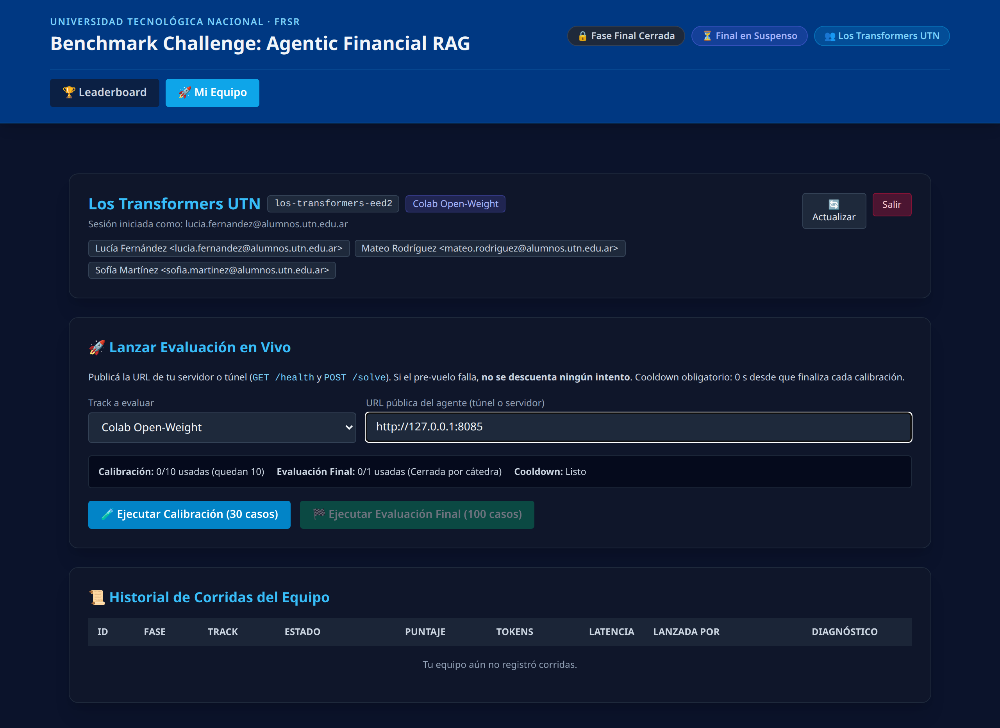
Ejecutar una Calibración (30 casos ciegos)
Con tu servidor corriendo y la URL pegada, hacé clic en 🧪 Ejecutar Calibración (30 casos).
Vas a ver el progreso en tiempo real caso por caso (Evaluando X/30...) mientras el evaluador consulta tu endpoint POST /solve.
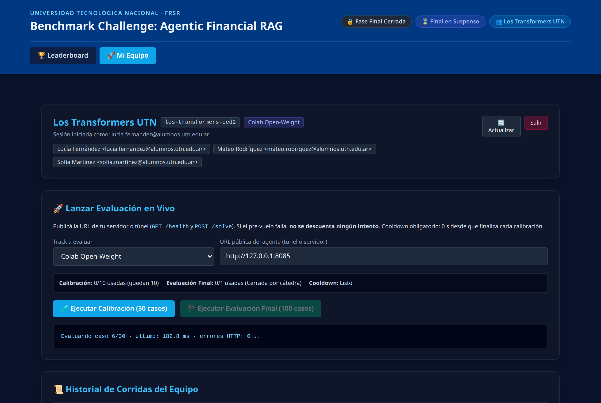
Al finalizar los 30 casos, la corrida pasa a estado completed en el historial, muestra el puntaje neto, tokens totales, latencia promedio, quién la lanzó, y habilita el botón 📊 Ver. La mejor calibración de tu equipo se marca con ⭐ Mejor y es la que figura en el Leaderboard público.
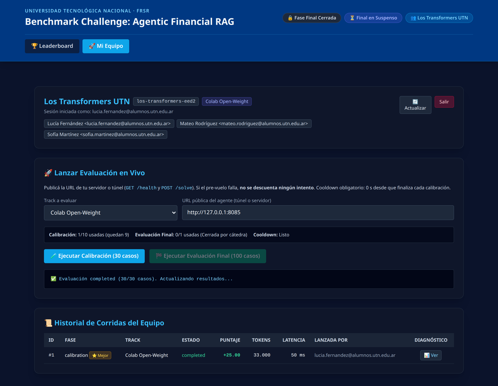
Analizar el Diagnóstico Ciego
Haciendo clic en 📊 Ver se abre el modal de Diagnóstico Ciego (privado para tu equipo). Sin revelar preguntas ni respuestas de los casos ciegos, te entrega información accionable para iterar tu agente:
- Latencia detallada: promedio,
p50,p95, máximo, cantidad de casos>45sy errores HTTP. - Recomendaciones automáticas: sugerencias concretas según los fallos detectados.
- Patrones de falla agregados: identifica cuántos casos fallaron por
magnitude_10x/scale_mismatch,sign_error,percent_decimal,hallucination_on_abstain,abstain_cautiousoschema_error, junto con su impacto en puntos. - Rendimiento por origen de evidencia: compara tu tasa de acierto entre casos de solo tabla (
table) y casos mixtos tabla + notas (table-text). - 📋 Copiar JSON para IA: copia el resumen estructurado del diagnóstico para pegarlo directo en tu asistente de código y planificar mejoras.
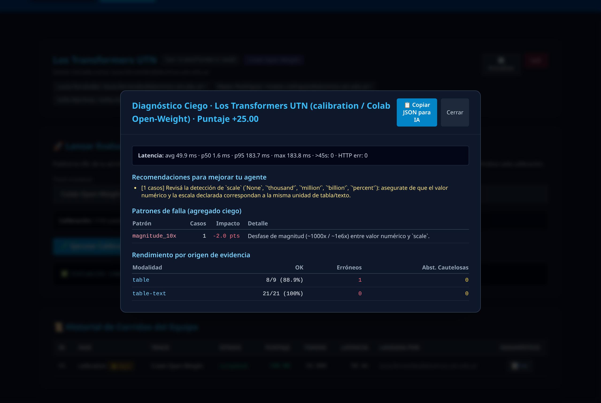
Recuperación ante Caída de Túnel o Colab (interrupted)
Si durante una evaluación (tanto en Calibración como en Final) se corta el túnel de Cloudflare/ngrok o se desconecta Google Colab, la plataforma reintenta automáticamente y, si confirma que el servicio cayó:
- Pausa la corrida en estado
⚠️ interruptedy guarda todos los casos ya evaluados hasta ese punto. - No penaliza con
-1.5los casos que faltaban ni te obliga a gastar un nuevo intento. - Te muestra en qué caso se cortó (por ejemplo,
caso 8/30).
2) Pegá la nueva URL en el campo
URL pública del agente (túnel o servidor) del panel.3) Hacé clic en el botón amarillo ▶️ Reanudar en la fila de la corrida interrumpida.
La evaluación continúa exactamente desde el caso pendiente hasta completar el 100% (se permiten hasta 2 reanudaciones por corrida).
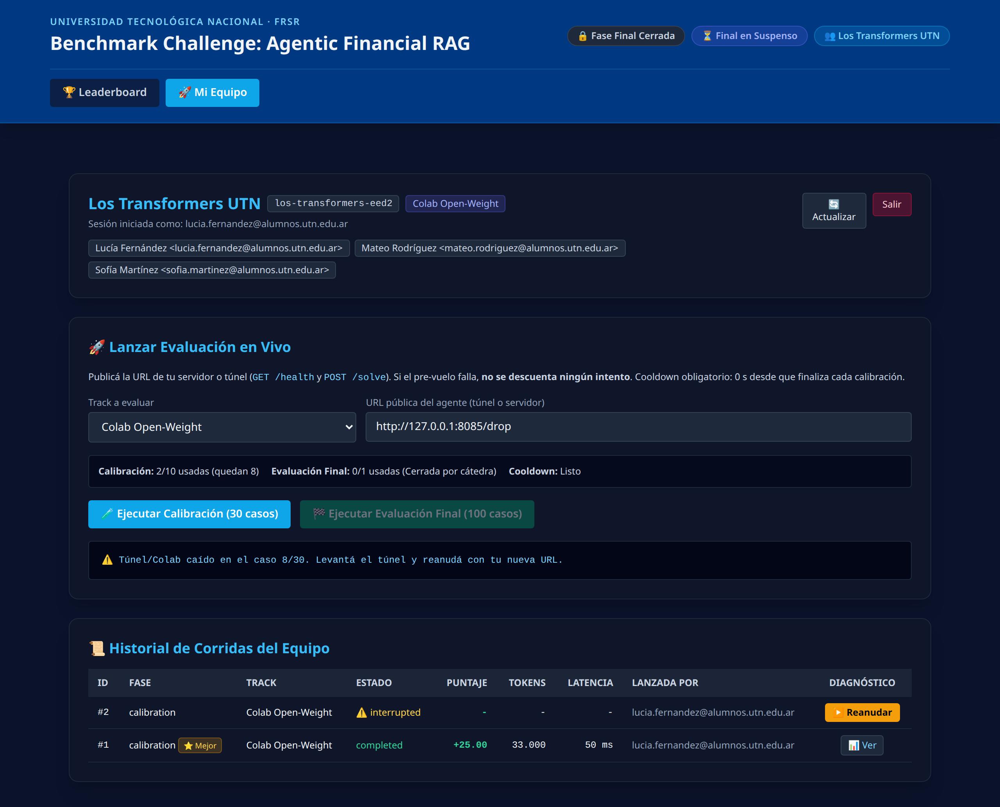
Seguir tu Posición en el Leaderboard de Calibración
Cada vez que mejorás tu agente y completás una nueva calibración (respetando el cooldown obligatorio entre corridas), si superás tu marca anterior la tabla pública se actualiza automáticamente con tu nueva mejor corrida. Desde la propia tabla también podés hacer clic en 📊 Ver en la fila de tu equipo.
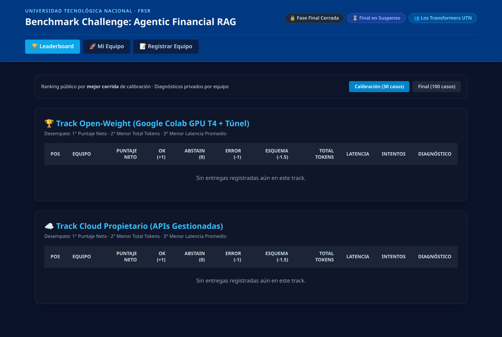
Evaluación Final (100 casos) y Modo Suspenso
Cuando la cátedra habilita la ventana de cierre, el indicador superior cambia a 🟢 Fase Final Abierta y se activa el botón
🏁 Ejecutar Evaluación Final (100 casos) en Mi Equipo.
- Tenés 1 único intento oficial por track habilitado. Al presionar el botón, el sistema pide confirmación explícita.
- Al completarse los 100 casos, mientras el modo suspenso esté activo, la entrega figura como ✅ Entregado con las métricas y el diagnóstico bloqueados (
🔒 Suspenso) para mantener la expectativa hasta la presentación final.
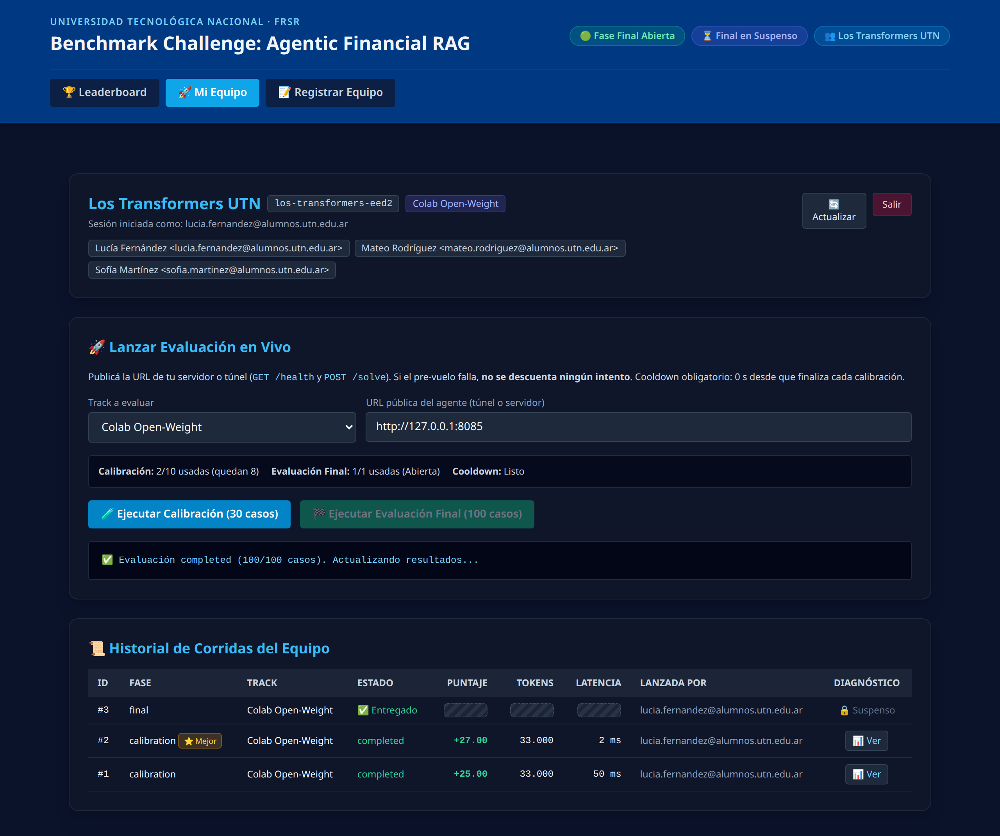
Ceremonia de Podio y Leaderboard Final Revelado
Cuando la cátedra revela los resultados en vivo, se proyecta el podio oficial de cada track y el Leaderboard de
Final (100 casos) desbloquea todos los puntajes, desgloses (OK, ABSTAIN, ERROR, ESQUEMA),
tokens y latencias. También podés volver a ver la animación con el botón 🎬 Ver Podio y revisar tu diagnóstico final.
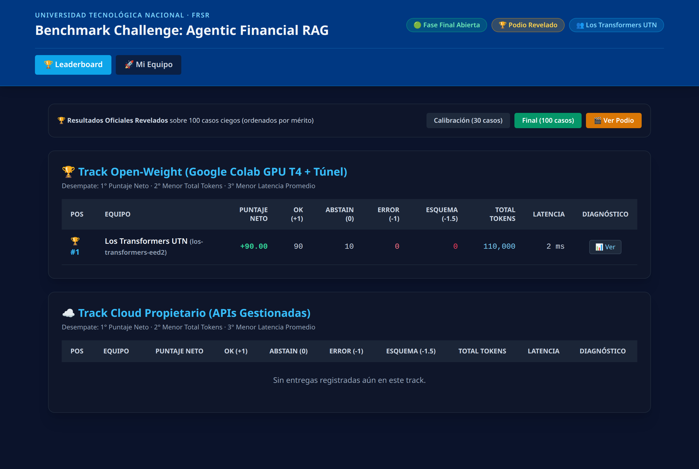
Solución de Problemas Frecuentes
| Situación | Qué significa | Qué hacer |
|---|---|---|
Falla el pre-vuelo GET /health |
El evaluador no pudo alcanzar tu túnel o recibió un código distinto de 200. |
No perdiste ningún intento. Verificá que el servidor esté levantado, que la URL no termine en /solve y que el túnel responda desde afuera. |
| Botón de Calibración deshabilitado por Cooldown | Hay un tiempo de espera obligatorio desde que finalizó la última calibración. | Esperá a que el contador llegue a Listo. Usá ese tiempo para revisar el Diagnóstico Ciego y probar mejoras en local. |
Muchos errores ESQUEMA (-1.5) |
Tu endpoint devolvió HTTP 5xx, un JSON inválido o incumplió CaseOutput. |
Validá siempre con CaseOutput.model_validate(...) en src/server.py antes de responder y probá primero con run_local_eval.py. |
Corrida en estado ⚠️ interrupted |
Se cayó Colab o el túnel a mitad de la corrida. | Levantá un túnel nuevo, pegá la nueva URL en el panel y presioná ▶️ Reanudar. |
Perdimos la API Key del equipo |
La clave no se vuelve a mostrar por seguridad después del registro. | Soliciten a la cátedra una rotación/reenvío de credencial desde la consola administrativa. |